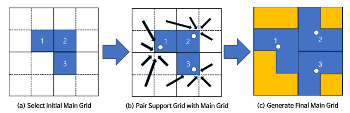
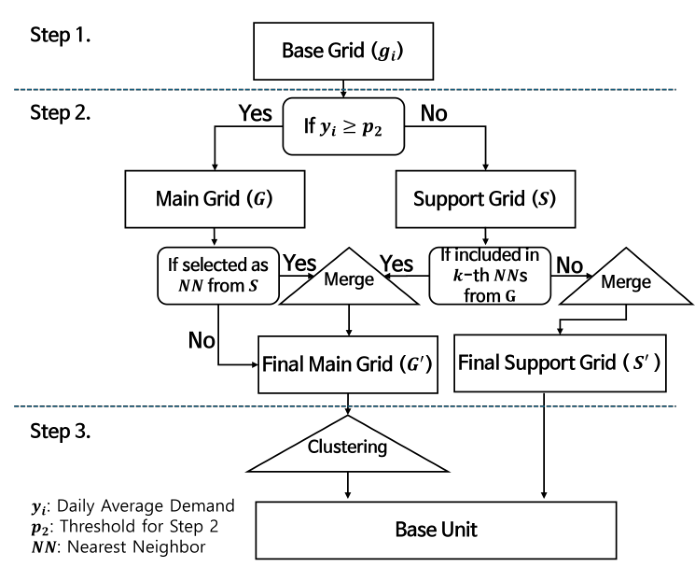

Spatial units that reflect usage patterns
Development of an enhanced base unit generation framework for predicting demand in free-floating micro-mobility
This work addresses the MAUP: how fixed-grid size and boundaries affect demand prediction. I combined low-usage areas and used temporal patterns and distance to construct spatial prediction units.
- Method:
- base grids → main/auxiliary grid merging → spatiotemporal clustering
- Results:
- lower RMSE in both cities; higher MAPE in Minneapolis


Research problem
Free-floating vehicles have no fixed stations, so demand must be aggregated into spatial units. Grid width and boundaries alter the distribution of zero and high demand even for the same trip records. Simply enlarging grids also changes target scale, so prediction improvements must be distinguished from aggregation effects.
Approach
- Representative locations: Divides each base grid into 4 subgrids and adjusts its representative location when usage is concentrated on one side.
- Merging main and auxiliary grids: Distinguishes the two types by average daily usage and merges auxiliary grids into nearby main grids. The number of merges is limited, and unmerged auxiliary grids remain separate units.
- Spatiotemporal clustering: Multiplies cosine similarity of 24-hour usage proportions by distance-based similarity. Spatial similarity is set to 0 for nonadjacent and diagonally adjacent pairs. Hierarchical clustering then constructs the final units.
Experimental setup and framework
I used shared e-scooter records from July–August 2019 in Kansas City and July–August 2022 in Minneapolis. The framework was compared with 250m, 500m, and 750m grids, using a simple LSTM with hourly demand and calendar inputs. July was used for training and August for evaluation, with fixed-origin validation within the training period. Each experiment was repeated 5 times. Targets were trained after log1p transformation and evaluated after conversion back to the original units.


Contributions
As first author, I worked on conceptualization, methodology design, data preparation, software implementation, visualization, and writing. The research focuses on designing aggregation units rather than increasing prediction-model complexity.
Results vary by city and metric
| City | RMSE: 500m → proposed | MAPE: 500m → proposed |
|---|---|---|
| Kansas City | 1.7601 → 1.5868 | 0.7115 → 0.6875 |
| Minneapolis | 0.8521 → 0.7776 | 0.6905 → 0.7226 |
Lower error is better; MAPE is reported as a ratio and excludes cases with actual demand of 0. Changing aggregation units can also change the scale of absolute errors.
RMSE decreased in both cities, while MAPE increased in Minneapolis. Interpretation depends on street-level location recording and treatment of zero demand. The units do not guarantee spatial connectivity, which motivates further investigation of parameters and connectivity.